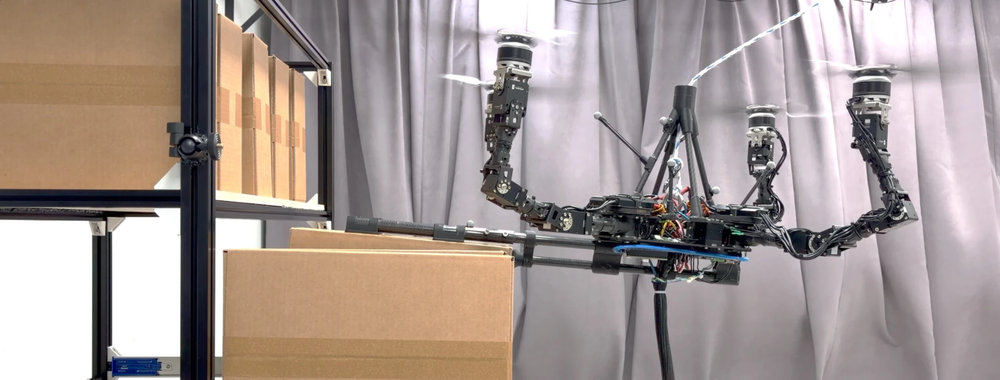

Rotor-position morphing
Reshape the allocation geometry to redistribute rotor thrust.
STRIDER
Feasibility-Aware MPC for Rotor Thrust Saturation Mitigation in Morphable Multirotors
IEEE Robotics and Automation Letters · 2026

Morphing and attitude-reference correction mitigate rotor saturation under off-center loading.
The challenge
An off-center payload can overload individual rotors despite sufficient total thrust. STRIDER reshapes the rotor geometry and adjusts the attitude reference, predicting the coupled response under thrust and morphing constraints.
The approach

Reshape the allocation geometry to redistribute rotor thrust.
Reduce transient moment demand while the rotor modules move.
Coordinate both actions under thrust and morphing constraints.
Flight experiments
Public video forthcoming
The supplementary video will be available here.
Watch on YouTubeSimulation
Replay payload maneuvers with four controllers. Inspect motion, rotor thrusts, and morphing states in the plotting UI.
Development code available; curated release in preparation.
Controller comparison
Full formulation
NMPC jointly optimizes rotor-position morphing and attitude-reference correction.
[15] C. Kim et al., “A morphing quadrotor that can optimize morphology for transportation,” IROS 2021.
@article{ju2026morph,
title = {Morph to Survive: Feasibility-Aware {MPC} for Rotor Thrust Saturation Mitigation in Morphable Multirotors},
author = {Ju, Jinu and Lee, Dongjae and Shin, Hanryung and Kong, Sunyoung and Kim, Youngjun and Lee, Seung Jae},
journal = {IEEE Robotics and Automation Letters},
year = {2026},
note = {Accepted for publication, November 2026}
}